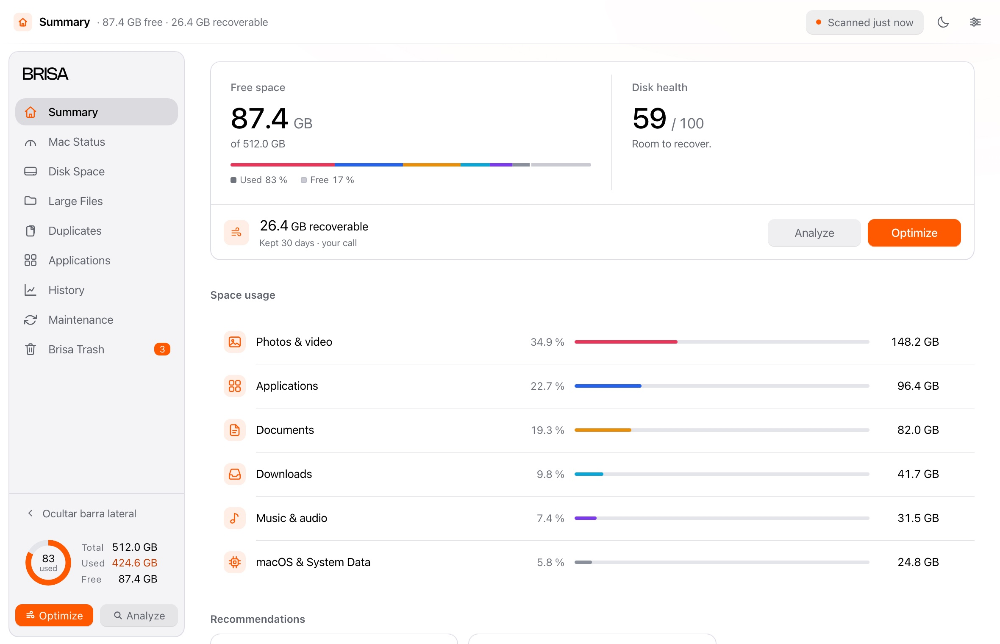
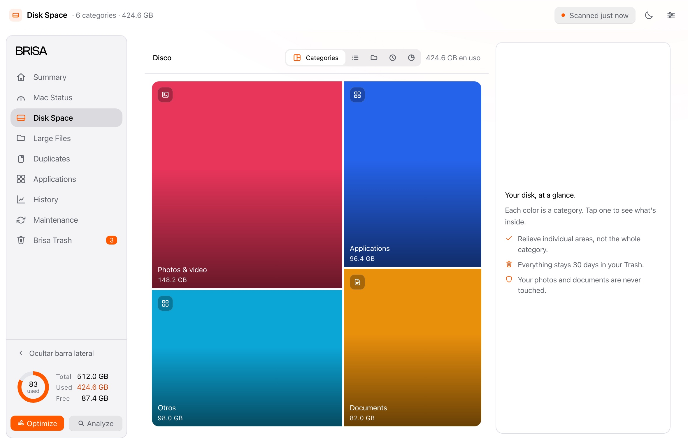
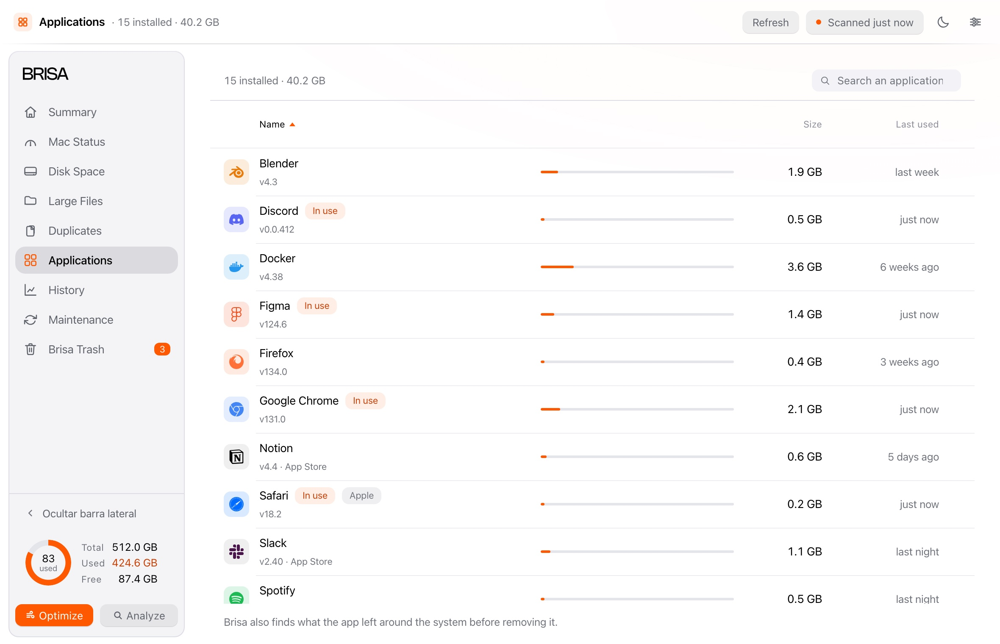

Summary
How much your disk holds, and how much can come back.
Shows first, removes laterBrisa measures what fills your disk and shows you the plan with names and numbers. Nothing moves without your permission.

What it does
What can be freed, and how much, before anything moves.
Disk space
One scan measures the whole disk: what each thing takes, and what you have not opened in months.

Applications
Dragging an app to the Trash takes it out of sight, not out of the system. Brisa also finds what it leaves behind on the disk.
Uninstalling is final: Brisa warns you first. A cleanup always goes through the Trash.

Safety
Cleaning up should never be the reason you lose something.
Questions
macOS 14 (Sonoma) or later. It asks for no permissions when it opens, works offline and needs no account.
No. It scans first and shows you the plan. Nothing moves until you confirm.
Because this beta is not signed by Apple. The warning does not mean anything is wrong with Brisa. The steps are on the download page.
Nothing, unless you ask it to. The single exception is “Help improve Brisa”, and it sends only what you decide.
It works all the same: it measures everything else and tells you what is missing. The permission can be withdrawn whenever you want.
Download it and see how much space comes back.